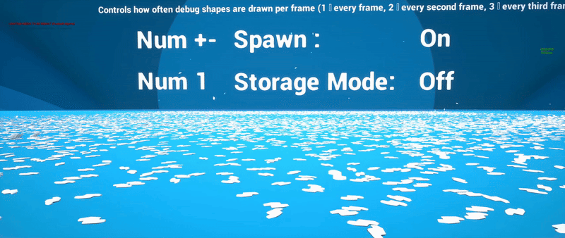

PhysX Instanced Subsystem Demo
Demonstrates rigid body counts that conventional actor-per-body simulation cannot reach, by backing instanced mesh transforms with PhysX bodies managed from a world subsystem.
Download
Demo project · Plugin repository

PhysX实例化子系统模拟了大量实例化的刚体。
采用实例化渲染，每个实例都使用真实的 PhysX 物理体。在相同预算下，这里的物理体数量远远超过每个角色一个物理体的模拟方式。
What it demonstrates
Conventional Unreal physics spawns an AActor with a UPrimitiveComponent per body. That works to a few
thousand bodies and then the actor and component overhead, not the solver, becomes the limit — as the Physics Cube Bench shows.
The subsystem keeps one or a few instanced mesh actors for rendering, creates per-instance PhysX rigid bodies, and writes their poses back into ISM/HISM instance transforms. Rendering is instanced, simulation is real, and the actor overhead is gone.
Run this alongside the Physics Cube Bench for the comparison that makes the difference concrete.
What to look at
| Feature | Where it shows |
|---|---|
| Per-frame budgets | Spawn and simulation work is capped per frame rather than spiking |
| Auto-stop conditions | Settled instances stop simulating and convert to storage |
| Dynamic versus storage instances | Only what needs simulating is simulated |
| Lifetime management | Instances expire without leaving actors behind |
| CCD modes | Fast-moving bodies without tunnelling |
The budget and auto-stop behaviour is the part worth understanding. Large body counts are affordable because most bodies are asleep most of the time; the subsystem makes that automatic rather than something you manage.
Full API and configuration detail in Instanced Physics.
When to use it
Debris, rubble, shell casings, foliage knocked loose, destruction fallout — anything where you want many physically simulated objects that do not each need their own actor identity, gameplay logic or replication.
It is not a replacement for actor-based physics where you need per-object gameplay behaviour. It is for the case where the objects are scenery that happens to move.
Status
Bundled at version 1.11 in Engine\Plugins\Runtime\VitePlugins\PhysXInstancedSubsystem. See
Bundled Plugins.